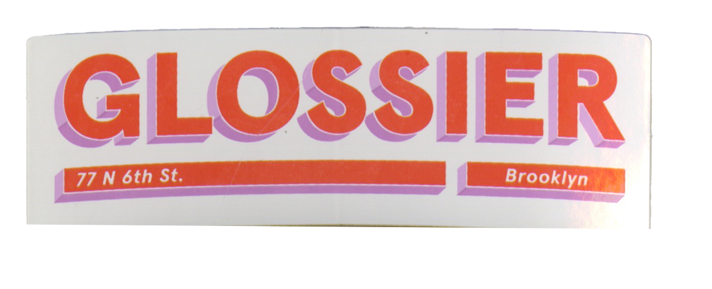
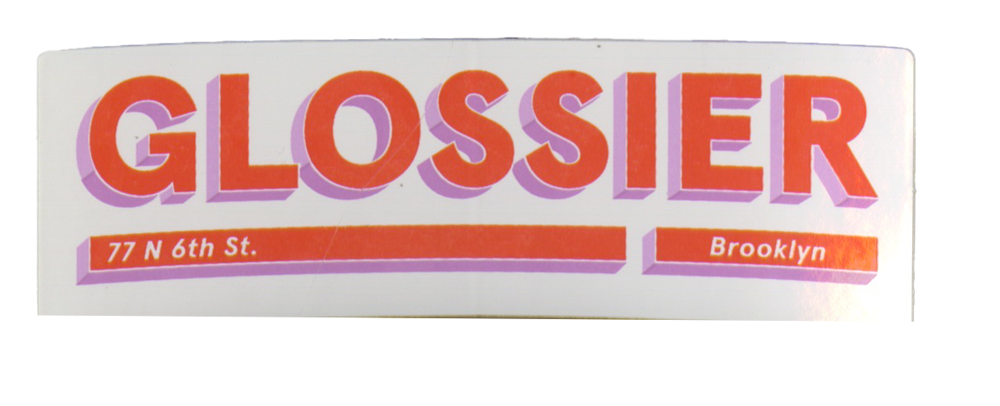

Digging Into the Psychology of Freebies
by Atul Yadav
The word ‘Free’ is a crucial agent that motivates people into making decisions. In the holiday season, many of us would have found ourselves shopping in supermarkets or online stores. Their major draw is lucrative deals and freebies. In simple words, a freebie is something that one gets for free. i.e. without paying any cost for it.
What makes freebies attractive?
If we go to buy a toothpaste and get a toothbrush free with it, a lot of us would experience joy and excitement. Research states that these feelings are associated with increased levels of oxytocin, which is associated with lower levels of stress and may encourage people to keep seeking this feeling. The joy associated with getting something for free and not paying for something that one would have bought anyway, is unparalleled. It gives us a sense of accomplishment for having saved money, thereby giving us the luxury to spend the newly saved amount on leisure instead of necessity.
Another example could be the small stickers and/or toys that are often free with candies. Children are encouraged to collect them for reasons such as loyalty to their favourite cartoon characters, one-upping their peers and so on. When it becomes a habit, there comes a time when they buy the candies solely for the free goodies that accompany them.
Freebies have become increasingly common across sectors and as a marketing tool, they are easy and effective.
However, there are always hidden costs associated with freebies. For example, the deals at supermarkets are often aimed at weeding out competition. One may also quote the case of a telecom company that offered free data services and enrolled an unprecedented number of consumers to its subscriber base. It worked wonders for connecting the masses, but it also sieved out multiple telecom competitors in India, causing high economic losses.
Ultimately, after almost gaining a monopoly, the telecom company also increased its costs to match the existing market rates.
Freebies when used in vital and indispensable sectors such as medicine and governance have especially far-reaching consequences. The case of a popular Paracetamol tablet recently revealed that the sacrosanct trust patients place in doctors also needs to be re-examined. Pharmaceutical companies are known to lure doctors by freebies in exchange for prescribing their drugs to patients. Freebies here could include the promise of being made the lead investigator in clinical trials, sponsorships for article publications, international conferences, and gifts, the likes of televisions, refrigerators and even gold coins.
Governance too is bitten by the freebie bug. The electoral promise of free electricity, free public transport for women, and loan waivers for farmers in many states are all well reported examples. A south Indian state is also known for SOP wars between its two major political parties where items such as TVs, laptops, mixers and even gold mangalsutras have been given to lure voters. Apart from causing a huge drain to the exchequer and increasing the tax burden on the common man, it all goes against the ethos of free and fair elections.
The threats to economic stability notwithstanding, there are certain common psychosocial consequences of freebies across different sectors.
If things are free, there’s a tendency in humans to use it excessively. It also reduces the perceived value of that good or service and consumers may get lazy. It increases disparities among the haves and have-nots.
Freebies are also environmentally unsound. For example, free electricity disincentivizes the public from investing in green energy practices like solar panels etc. Free public transport for women takes the conversation away from investing in making the cities safer for women. It also leads to discontentment among honest taxpayers whose funds are used to finance these freebies.
Freebies are an easy way to gain loyalty and consumers. The proponents of freebies have various arguments in their favour. Pharmaceutical firms term them as effective marketing policies. Political parties find them to be an easy way to secure voter conformity.
However, the hidden costs of freebies are too high to be ignored. The amount spent in freebies is usually recovered from the consumers in the form of higher prices. Stakeholders need to think of the long-term repercussions of freebies. The Supreme Court of India too has expressed unfavourable opinions against both medical and electoral freebies.
To sum up, people wouldn’t need allurements if they aren’t deprived of what they need!